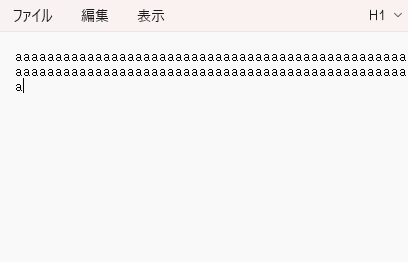

BLEキーボードとボタンの合体
26/02/15作成
合体させる
以前
にボタンの入力をとれるようになったので、ボタンを押したときにaを入力する
配線は以前を参照
ソースコード
#include <BleKeyboard.h>
BleKeyboard bleKeyboard("ESP32 Keyboard");
const int buttonPin = 15;
void setup() {
pinMode(buttonPin, INPUT_PULLUP);
Serial.begin(115200);
Serial.println("Starting BLE work!");
bleKeyboard.begin();
}
void loop() {
if (bleKeyboard.isConnected()) {
int buttonValue = digitalRead(buttonPin);
if(buttonValue == LOW){
bleKeyboard.print("a");
}
}
delay(10);
}
解説
ボタンの入力をbuttonValueで受け取れるのでそれを使う
押すとLOWになるので、その時にaを入力する
delayが長いとその間に押したものは無視されるので短くする
結果

押している間ずっとaが入力される
その対応は次